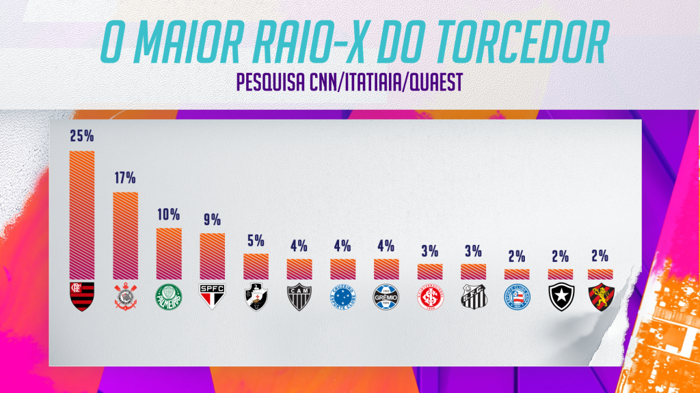

O Flamengo é o dono da maior torcida do Brasil, segundo a nova pesquisa O Maior Raio-X do Torcedor, realizada pela parceria CNN/Itatiaia/Quaest. O Rubro-Negro lidera como o time do coração para 25% dos entrevistados, seguido pelo Corinthians, com 17%, e o Palmeiras e São Paulo, com 10% e 9%, respectivamente.
| Posição | Clube | % |
|---|---|---|
| 1 | Flamengo | 25% |
| 2 | Corinthians | 17% |
| 3 | Palmeiras | 10% |
| 4 | São Paulo | 9% |
| 5 | Vasco | 5% |
| 6 | Atlético MG | 4% |
| 7 | Cruzeiro | 4% |
| 8 | Grêmio | 4% |
| 9 | Inter | 3% |
| 10 | Santos | 3% |
| 11 | Bahia | 2% |
| 12 | Botafogo | 2% |
| 13 | Sport | 2% |
No levantamento, que teve 6.373 entrevistas entre 27 de abril e 1º de maio, mais de 60% dos brasileiros que se declaram amantes de futebol torcem para um dos quatro clubes que formam o G-4 das maiores torcidas do país. Isso é o que aponta O Maior Raio-X do Torcedor de 2024.
Somados, os quatro clubes de maior torcida do Brasil somam 61% da preferência, o que mostra que quase dois em cada três torcedores brasileiros são flamenguistas, corintianos, palmeirenses ou são-paulinos. Esses quatro clubes mantêm a mesma posição do Raio-X do Torcedor.
Em abril de 2023, o Flamengo foi apontado como clube do coração por 24% dos torcedores, passando este ano para 25%. O número de torcedores do Corinthians teve uma queda de um ponto percentual, passando de 18% para 17%.
O maior rival corintiano, o Palmeiras, subiu de 9% para 10%, e o São Paulo com 9% em 2023, manteve a mesma porcentagem em 2024.